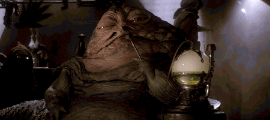

Star Wars: Jabba Juice

I chose this recipe because I wanted something that I was interested in. Star Wars has been my favorite movie series since I was a kid. Like many, my favorite character in Star Wars is Boba Fett. Immediately following Boba Fett in my favorite Star Wars characters is Jabba the Hutt. Please enjoy this delicious drink inspired by Jabba the Hutt and made by Diznify
- Mix the Simply Orange with Pineapple Juice with the kiwi and cantaloupe syrups.
- Pour over ice and garnish with blueberry popping pearls.
This is a copycat recipe for a drink found at Oga's Cantina in Star Wars: Galaxy's Edge.
Home